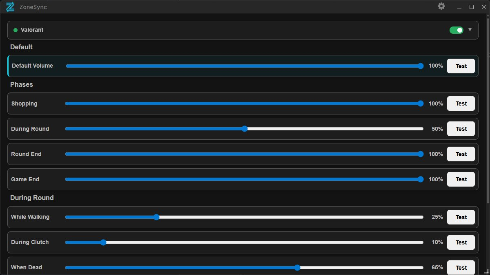

ZoneSync automatically ducks Spotify, Discord and other apps during crucial

ZoneSync works with competitive games. More titles are on the way.
Counter-Strike 2 is supported today. More titles are on the way.
Get ZoneSync from the Overwolf Store.
Download ZoneSync from the Overwolf Store.
ZoneSync will be available for download on the Overwolf App Store. Questions or feedback? We'd love to hear from you. ZoneSync is free on the Overwolf App Store and currently supports Counter-Strike 2. Questions or feedback? Join the Discord community or email us.
Discord Comunity